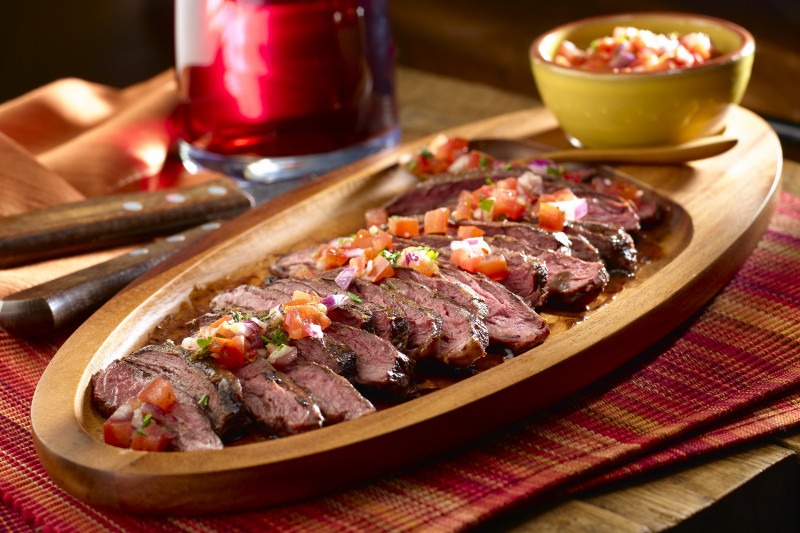
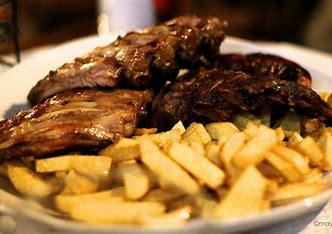

Producto UNO
Churrasco argentino
Corte jugoso, preparado al estilo tradicional argentino.
Experimenta el verdadero espíritu de Argentina con nuestro churrasco argentino. Cortes de carne de primera, asados a la perfección sobre brasas ardientes, realzados con un toque de chimichurri fresco. Cada bocado es tierno, jugoso y lleno de sabor. ¡Prepárate para un festín que hará que tus papilas gustativas bailen al ritmo del tango!
Producto DOS

Churrasco brasileño
Churrasco con sabor auténtico de Brasil, cocinado a fuego lento.
Déjate seducir por la magia del churrasco brasileño. Nuestro secreto está en la marinada, que combina especias autóctonas y hierbas frescas para crear una explosión de sabores en tu boca. Asado lentamente hasta alcanzar un acabado crujiente y ahumado, este platillo es perfecto para compartir entre amigos y disfrutar de una auténtica fiesta brasileña en cada bocado.
Producto TRES
Churrasco de cerdo
Churrasco de cerdo sazonado con especias y asado a la perfección.
Para los amantes de la carne de cerdo, nuestro churrasco de cerdo es la opción perfecta. Jugoso y tierno, cada corte está marinado con especias especiales que resaltan su sabor único. Asado hasta que la piel esté dorada y crujiente, este churrasco te hará desear repetir una y otra vez.